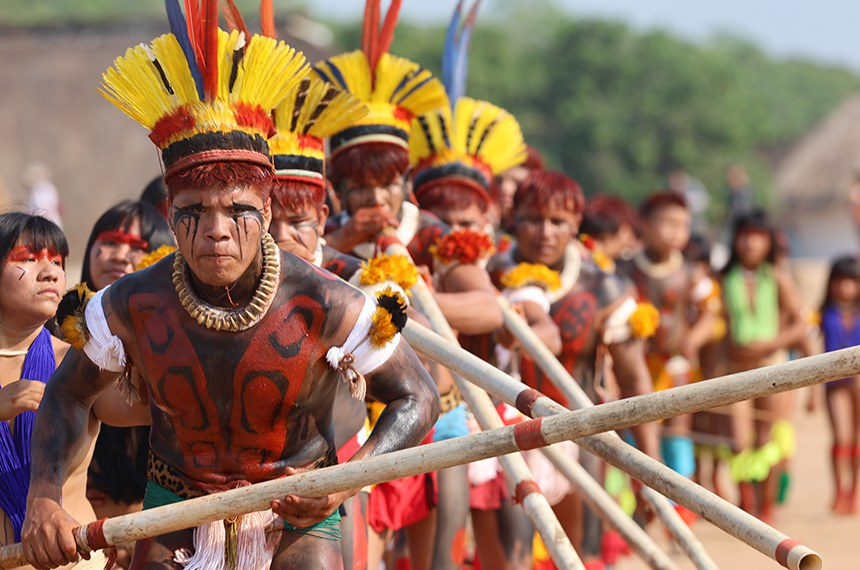
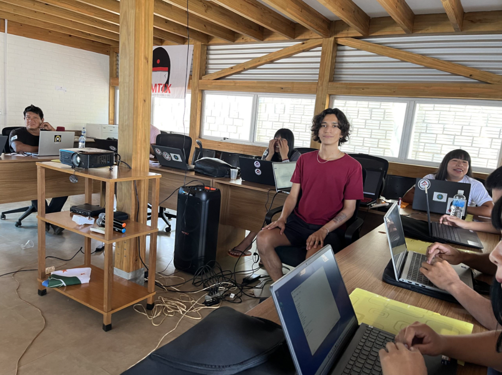

A História Viva dos Povos do Xingu

O Parque Indígena do Xingu, localizado no norte do Mato Grosso, é um território que abriga diversas etnias indígenas, cada uma com sua língua, costumes e formas de organização social. Criado oficialmente em 1961, o Parque é um símbolo da luta pela preservação da cultura indígena e dos direitos territoriais, sendo um dos maiores exemplos de proteção ambiental e cultural do Brasil.
Antes da criação do Parque, os povos do Xingu já viviam em um ecossistema complexo, demonstrando conhecimento profundo sobre a floresta, os rios e os ciclos da natureza. Suas aldeias são construídas em torno de praças centrais, onde se realizam festas, rituais e assembleias comunitárias. Esse espaço central fortalece a coesão social e é fundamental para a manutenção da cultura e das tradições.

Cultura e Tradição
Cada povo do Xingu possui tradições específicas, incluindo festas, danças, artesanato e pinturas corporais que representam histórias, mitos e valores comunitários. As festas são momentos de celebração e transmissão de conhecimentos, envolvendo toda a comunidade e fortalecendo a identidade coletiva.
O artesanato, a produção de cerâmica, cestaria e os trabalhos com penas e madeira são transmitidos de geração em geração. As pinturas corporais, feitas com pigmentos naturais, têm significados simbólicos ligados à espiritualidade, à vida comunitária e à proteção contra forças negativas.
Resistência e Adaptação
Ao longo da história, os povos do Xingu enfrentaram diversas ameaças, desde invasões e doenças trazidas por colonizadores até tentativas de retirada de terras. Apesar disso, eles mantiveram suas culturas vivas, adaptando-se às mudanças sem perder sua essência. Essa resistência é um exemplo de resiliência e sabedoria ancestral.
Hoje, a modernidade chega às aldeias de forma cuidadosa: energia solar, internet, rádios comunitárias e tecnologias para educação são integradas sem substituir os costumes tradicionais. Essa adaptação permite que jovens indígenas estudem, registrem suas culturas e participem de debates políticos, mantendo um equilíbrio entre tradição e inovação.

Educação e Lideranças
As novas gerações de xinguanos têm desempenhado papéis importantes na preservação do patrimônio cultural e na defesa do território. Muitos jovens lideram projetos ambientais, promovem a educação bilíngue (língua indígena e português) e utilizam mídias digitais para contar suas histórias ao mundo. Assim, fortalecem a identidade cultural e ampliam a compreensão da importância dos povos indígenas na sociedade brasileira.
Além disso, líderes indígenas participam de debates nacionais e internacionais, lutando pela proteção de terras, dos direitos humanos e pelo reconhecimento da diversidade cultural. Essa participação mostra que os povos do Xingu não apenas preservam o passado, mas também constroem soluções para os desafios do presente e do futuro.
O Xingu Hoje
O Parque Indígena do Xingu é hoje um exemplo vivo de resistência, preservação ambiental e cultural. Suas aldeias demonstram que tradição e modernidade podem coexistir, oferecendo lições valiosas sobre respeito à natureza, solidariedade comunitária e valorização da diversidade. Celebrar o Xingu é reconhecer a importância dos povos indígenas para a formação da identidade brasileira e para um futuro sustentável.